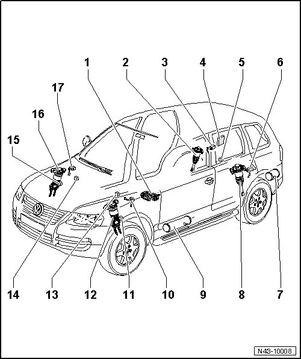

Air Spring: Locations
Level Control System Components and Locations
• During Model Year (MY) 2004, the level control system control module (7L6 907 553 A /B) (200 Hz) was replaced by the level control system control module (7L0 907 553 F/*) (800 Hz).
• As of the implementation of new control modules, the wheel speed sensors are no longer installed, and the vehicle level sensors were adapted.
• If a 800 Hz control module instead of 200 Hz control module is installed, also the vehicle level sensors must be replaced. The wheel speed sensors remain in the vehicle for the purpose of sealing the line.

1 Air supply unit with solenoid valve block
• can be tested in "Guided Fault Finding" using the vehicle diagnosis, testing and information system (VAS 5051 ).
• Removing and installing without solenoid valve block, refer to --> [ Air Supply Unit without Solenoid Valve Block ] Air Supply Unit without Solenoid Valve Block.
• Removing and installing with solenoid valve block, refer to --> [ Air Supply Unit with Solenoid Valve Block ] Air Supply Unit with Solenoid Valve Block.
• Servicing, refer to --> [ Air Supply Unit Assembly Overview ] Air Supply Unit Assembly Overview.
• Component location: right front, on underbody
• With level control system compressor motor (V66)
• With level control pump temperature sensor (G290)
• With level control pressure sensor (G291)
2 Rear right air spring shock absorber
• With right rear dampening adjustment valve (N339)
• Can be tested in "Guided Fault Finding" using the vehicle diagnosis, testing and information system (VAS 5051 ).
3 Right rear level control system sensor (G77)
• Can be tested in "Guided Fault Finding" using the vehicle diagnosis, testing and information system (VAS 5051 ).
• Removing and installing, refer to --> [ Level Control System Sensor ] Rear Suspension.
• Component location: On rear subframe.
4 Level control system control module (J197)
• Can be tested in "Guided Fault Finding" using the vehicle diagnosis, testing and information system (VAS 5051 ).
• Removing and installing, refer to --> [ Level Control System Control Module ] Level Control System Control Module.
• Component location: In luggage compartment behind flap of right side wall trim.
• See notes.
5 Rear body acceleration sensor (G343)
• Can be tested in "Guided Fault Finding" using the vehicle diagnosis, testing and information system (VAS 5051 ).
• Component location: In luggage compartment beneath right trim in vehicle floor, underneath spare wheel cover.
6 Left rear level control system sensor (G76)
• Can be tested in "Guided Fault Finding" using the vehicle diagnosis, testing and information system (VAS 5051 ).
• Removing and installing, refer to --> [ Level Control System Sensor ] Rear Suspension.
• Component location: On rear subframe.
7 Rear pressure reservoir
• Component location: At left in luggage compartment, underneath spare wheel cover.
8 Rear left air spring shock absorber
• With left rear dampening adjustment valve (N338)
• Can be tested in "Guided Fault Finding" using the vehicle diagnosis, testing and information system (VAS 5051 ).
9 Front pressure reservoir
• Component location: Left front, on underbody.
10 Left front level control system sensor (G78)
• Can be tested in "Guided Fault Finding" using the vehicle diagnosis, testing and information system (VAS 5051 ).
• Removing and installing, refer to --> [ Level Control System Sensor, with Air Spring Damper ] Level Control System Sensor, with Air Spring Damper.
• Component location: On mounting bracket for left front air spring shock absorber.
11 Left front wheel acceleration sensor (G337)
• Can be tested in "Guided Fault Finding" using the vehicle diagnosis, testing and information system (VAS 5051 ).
• See notes.
• Component location: On left front air spring shock absorber, opposite to direction of travel.
12 Left front air spring shock absorber
• Can be tested in "Guided Fault Finding" using the vehicle diagnosis, testing and information system (VAS 5051 ).
• With left front dampening adjustment valve (N336).
13 Left front body acceleration sensor (G341)
• Can be tested in "Guided Fault Finding" using the vehicle diagnosis, testing and information system (VAS 5051 ).
• Component location: In left upper wheel housing.
14 Right front body acceleration sensor (G342)
• Can be tested in "Guided Fault Finding" using the vehicle diagnosis, testing and information system (VAS 5051 ).
• Component location: In right upper wheel housing.
15 Right front wheel acceleration sensor (G338)
• Can be tested in "Guided Fault Finding" using the vehicle diagnosis, testing and information system (VAS 5051 ).
• See notes.
• Component location: On right front air spring shock absorber, opposite to direction of travel.
16 Right front air spring shock absorber
• With right front dampening adjustment valve (N337).
• Can be tested in "Guided Fault Finding" using the vehicle diagnosis, testing and information system (VAS 5051 ).
17 Right front level control sensor (G289)
• Can be tested in "Guided Fault Finding" using the vehicle diagnosis, testing and information system (VAS 5051 ).
• Removing and installing, refer to --> [ Level Control System Sensor, with Air Spring Damper ] Level Control System Sensor, with Air Spring Damper.
• Component location: On mounting bracket for right front air spring shock absorber.